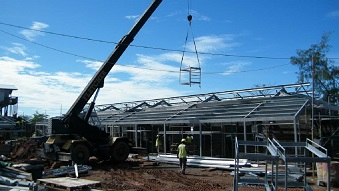
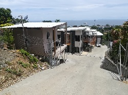

Island Life
I have returned from 6 &1/2 years employed as a Site Supervisor for Fletcher Construction South Pacific.

SOLOMON ISLANDS Projects:
*Gizo Correctional Centre (Prison)
*Lungga Power Station
*Markwarth Oil Housing Project
*ICTSU Govt. Building
*NZ High Commission Building
SAMOA Projects:
*British High Commission Office
*British High Commissioner residence refurb.
*Australian High Commissioner residence refurb.
*Taumeasina Island Resort Apartments Stage 2
During my tenure, I also undertook some private design work. Private houses, a church, a dive centre, a petrol service station and 2 multi-apartment complexes (8 units & 10 units)
